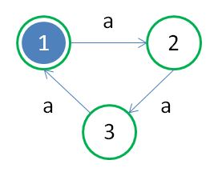
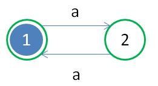
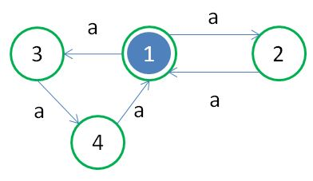
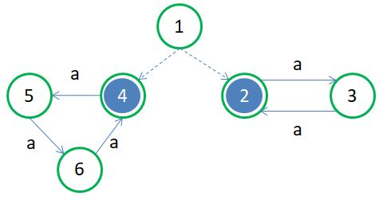
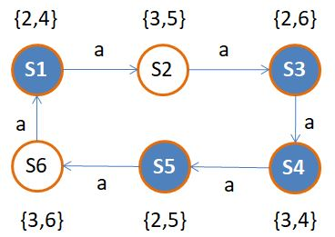

瞎猜的狀態機
December 17, 2021要識別某符號是否以 3 倍長度出現，可以使用有限狀態機實現，這在〈沒有記憶的機器〉就看過了：

如果要識別某符號是否以 2 倍長度出現呢？簡單，只要將以上的機器拿掉一個狀態就可以了：

如果要設計一個識別某符號是否以 2 倍數，或者是 3 倍數出現的機器呢？如果使用有限狀態機，就目前你看過的設計方式來說，你做不到！
好運氣！
不過，如果分別有以上兩台機器，加上一個人的話，可以先將輸入餵給其中一台，若機器處於不可接受狀態，再餵給另一台，若仍是不可接受狀態，那輸入的符號個數就不會是 2 倍數或者是 3 倍數！
然而，設計機器是為了將人的因素排除在外，有辦法將這兩台機器合併嗎？只要餵給它資料，中間不需要任何其他人為操作，就能知道機器接受或不接受字串？
簡單地將狀態 1 合併在一起呢？

問題來了，在一開始狀態 1 時若輸入了 a，有兩個可遵循的規則，一個規則是轉移至狀態 2，另一個規則是轉移至狀態 3，那麼該用哪條規則？如果兩個規則各代表一個齒輪，而且還有個選擇規則用、馬達驅動的齒輪，也許這時用力地給馬達齒輪轉動一下，看看正好卡住哪個規則齒輪，就進入該規則的下一狀態，這樣的機器是能實作出來的。
因此，如果是 aaa，機器運行時正好選擇了進入狀態 3 的規則齒輪，接下來會回到狀態 1，YA! 運氣真好，機器接受了，同樣地，若是 aa，或許也能有同樣的好運氣！
只不過，如果是 aaaaa 呢？如果運氣不好，第一次在狀態 1 時選擇進入狀態 2，回到狀態 1 時又選擇了進入狀態 3，這機器接受了，這結果顯然不是想要的，這機器應該具有神蹟，每次都運氣夠好，選中正確的規則，令 aaaaa 輸入時不接受。
如果這種說詞不能令人滿意，就讓機器一但卡住某個規則齒輪，就不能回頭好了：

機器一開機，不讀取任何輸入就會馬上驅動馬達，看看卡上哪個規則齒輪，這稱為自由移動，如果卡上右邊的齒輪，而輸入符號正好是 2 倍長度，機器就接受了，類似地，若輸入是 3 倍長度，又正好卡上左邊的齒輪，機器也是接受了。
非確定性有限自動機
如果機器在某個狀態，有著兩條以上可遵循的規則（可以是相同輸入的兩條以上規則，或者是不讀取任何輸入的兩條以上的自由移動規則），就會有著這樣的非確定性，因而上述的機器，可以稱為非確定性有限自動機（Nondeterministic Finite Automata, NFA），相對地，之前文件中談到的有限狀態機，因為每個狀態下能遵循的規則都是確定無岐義的，稱為確定性有限自動機（Deterministic Finite Automata, DFA）。
現實中當然也沒有每次運氣都這麼好的神機，也就是說，設計不出這種等同於神蹟的演算法，實際機器會有運氣不好的時候，明明是 3 倍長度卻卡上右邊的齒輪，使得機器誤判這不是 3 倍長度的輸入，反之亦然，這種認清現實，接受運氣不好的機器，倒是存在的。
只不過運氣不好的時候，明明是符合規律，機器卻不接受的情況，這樣的機器，可以稱為運算機器嗎？就機器本身來說，增加這種瞎猜的不確定性，至少還有「可能」矇對，沒有這種不確定性，就什麼也沒有了，這樣的機器與其說是要求運算出「是」或「不是」，不如說是運算出「是」、「可能不是」，或者「可能是」、「不是」的答案，就上面的組態圖來說，答案會是「這是 2 或 3 倍數長度的文字」或「這可能不是 2 或 3 倍數長度的文字」。
這種說法好像是在說，非確定性有限自動機，有著確定性有限自動機沒有的運算能力，實際上，非確定性有限自動機沒有比較強，只是狀態比較少，規則比較少，一開始比較容易設計罷了。
這就好比有時候，可以選擇的太多，中間必須考慮的事也很多時，腦袋一時無法轉過來時，人們就會傾向簡單的解決方式，瞎猜、丟硬幣、抽籤等方式就會因應而生。
轉換為確定性有限自動機
非確定性有限自動機可以轉換為確定性有限自動機！而且最後機器可以給出「是」或「不是」的答案，而非可能性的答案。
轉換的重點在於合併狀態為狀態集合，例如，在上面的自由移動情況下，實際上等同於機器進入一個包含 2 與 4 的「狀態集合」，接下來 2 可以轉換至 3，而 4 可以轉換至 5，等同於接受 a 之後，機器進入一個包含 3 與 5 的「狀態集合」，依此類推的話，可以設計出以下的確定性有限自動機：

狀態集合中若包含著狀態 2 或 3，都是接受狀態，可以使用〈沒有記憶的機器〉中的程式來制定規則並看看是不是可以運算：
let manual = new Manual([
new Rule({
state : 'S1',
input : 'a',
nextState : 'S2'
}),
new Rule({
state : 'S2',
input : 'a',
nextState : 'S3'
}),
new Rule({
state : 'S3',
input : 'a',
nextState : 'S4'
}),
new Rule({
state : 'S4',
input : 'a',
nextState : 'S5'
}),
new Rule({
state : 'S5',
input : 'a',
nextState : 'S6'
}),
new Rule({
state : 'S6',
input : 'a',
nextState : 'S1'
})
]);
let fa = new FA(manual, 'S1', ['S1', 'S3', 'S4', 'S5']);
console.log(fa.canAccept('aaaaaaaa'));
如果追求機器最後給出「是」或「不是」的答案，確實是可以將非確定性有限自動機轉換為確定性有限自動機，不過，在稍微複雜一點的運算時，在合併狀態的過程中，狀態集合與相應的規則會暴增，運算速度也會變得緩慢。
雖然每次都能猜中的神機不存在，然而，如果能忍受瞎猜，或者說是可以接受可能性的結果，以非確定性機器的概念來打造只求得可能性的實際機器，還是有其設計上的簡單與速度上的優點（也許一次就猜中）。
非確定性機器便於設計，因而也可以一開始以非確定性機器構思，之後逐步考量，試著將之轉換為確定性的機器，並評估其可行性（時間、狀態個數等考量是否能夠容忍）。
如果借助圖靈機的能力，可以在套用非確定性有限自動機規則的過程中，收集接下來的可能狀態，在輸入完成後，看看最後收集到的可能狀態中，是否包含接受狀態，透過這種方式來模擬非確定性有限自動機，好處是可以直接撰寫非確定性有限自動機的規則，而不用將之轉換為確定性有限自動機規則。
不過要小心的是，收集接下來的可能狀態並不等於合併狀態，接下來的模擬程式也已經不是有限狀態自動機了，因為它用到了 Set 這個記憶裝置，只是個方便驗證規則撰寫是否正確的程式：
class Rule {
constructor({state, input, nextState}) {
this.state = state;
this.input = input;
this.nextState = nextState;
}
isApplicableTo(state, input) {
return this.state === state &&
this.input === input;
}
}
class Manual {
constructor(rules) {
this.rules = rules;
}
collectStates(states, input) {
return Array.from(states)
.map(state => {
return this.rules.filter(rule => rule.isApplicableTo(state, input))
.map(rule => rule.nextState);
})
.reduce((acc, states) => acc.concat(states));
}
freeMoves(states) {
let frees = new Set(
this.collectStates(states, null)
);
return frees.size === 0 ? states : frees;
}
next_states(states, input) {
return new Set(
this.collectStates(this.freeMoves(states), input)
);
}
}
class Machine {
constructor(manual, states, acceptables) {
this.manual = manual;
this.states = new Set(states);
this.acceptables = acceptables;
}
canAccept(text) {
let manual = this.manual;
function digest(states, txt) {
if(states.size === 0 || txt.length === 0) {
return Array.from(states);
}
return digest(manual.next_states(states, txt[0]), txt.slice(1));
}
return digest(this.states, text).map(state => this.acceptables.includes(state))
.some(acceptable => acceptable);
}
}
let manual = new Manual([
new Rule({
state : 1,
input : null,
nextState : 2
}),
new Rule({
state : 1,
input : null,
nextState : 4
}),
new Rule({
state : 2,
input : 'a',
nextState : 3
}),
new Rule({
state : 3,
input : 'a',
nextState : 2
}),
new Rule({
state : 4,
input : 'a',
nextState : 5
}),
new Rule({
state : 5,
input : 'a',
nextState : 6
}),
new Rule({
state : 6,
input : 'a',
nextState : 4
})
]);
let machine = new Machine(manual, [1], [2, 4]);
console.log(machine.canAccept('aaaaa'));
再次強調，這個程式在行為上看似非確定性有限自動機，因為它的規則不是確定性的，然而其實不是非確定性有限自動機，因為程式借助了圖靈機的儲存裝置，才使得結果一定能給出「是」或「不是」的答案，如果不使用圖靈機的儲存裝置，是不可能打造出這種機器的！